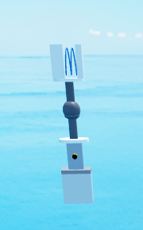
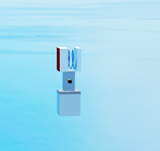
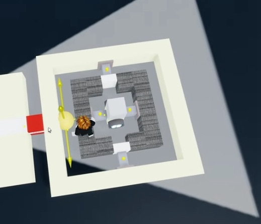

Massless
Massless is a core function of shredders. Without massless or its correct application, the common shredder will not work properly. The most common case of this is new players not locking their blade motor, so if you're new please read 2.2 Staging blade motors.
Massless Info
Massless modules work when a few requirements are met:
- The Motor2 has 100 torque or more.
- The object being made massless cannot be the root part of its assembly or the first child of the root assembly. This can be easily manipulated by simply having the massless module be anchored.
- The object to be made massless has a rotational velocity magnitude of 1 or more.
Certain objects have a scripted immunity to massless. This includes the Motor1 plate, Motor2 plate, and a joint within wing panels that controls drag properties.
Desync
Due to a bug, massless can desynchronize any group of assemblies without a potential root part within itself and the Motor2 that applied said massless.
This happens because whenever massless is applied, it creates a local variable that stores all the blocks within the assembly it's trying to turn massless so it can check for immune parts. However, this variable is never cleared, making the server view the massless module and the build as a single group. This doesn't happen on the client side, resulting in a desync due to differences in which part is considered the root part for each network end.
This can be easily overcome by intentionally manipulating the root parts so your build always contains the root part. The simplest way is having some sort of mass within your build, as mass is the biggest determining factor for a root part.
Staging
Staging Constraints
Massless does not spread to other assemblies (separate sections of your build, usually separated by constraints) that are not separated by balljoints, so you have to temporarily weld them together with staging blocks. It is sometimes needed to allow your build to spawn correctly too.
Springs are the most commonly used staging block—they leave no welds behind as long as you don't weld the top or bottom to the build. The only issue is getting stuck within the build and having to be flung out.
Disconnectors also work for staging, but leave behind a non-collidable part on the build.
TNT can be used for staging without leaving any parts behind since it deletes itself when activated. The radius or pressure should be set to 0.
Staging Blade Motors
Blades also require staging, or massless will not spread through the constraint separating the two assemblies. This can simply be fixed by locking the Motor1 (if you have multiple, it is advised to lock all of them).
Preventing Massless Gyros
Gyros will be severely weakened when massless is applied to them, because their strength is proportional to their mass. To fix this, you should place a lock-and-toggle Motor1 below the gyros and connect both ends of your massless module's Motor2 together with staging blocks.
After spawning, unlock the motor, remove the staging connection from the Motor2, then lock the motor again. You can simply set the locked motor and staging blocks to the same keybind and press it twice.
Massless Modules
3.1 Balljoint Massless
This module is an advancement of the three-block massless; it has the ability to make anchored assemblies massless.

3.2 Three Block Massless (deprecated)
It was later discovered that a massless module could be reduced to only three blocks, using an anchor to make it the root part and then a Motor2 to rotate the build and apply massless.

3.3 Ancient Massless Module (deprecated)
The first massless module, probably designed this way from a misunderstanding of how it worked.
